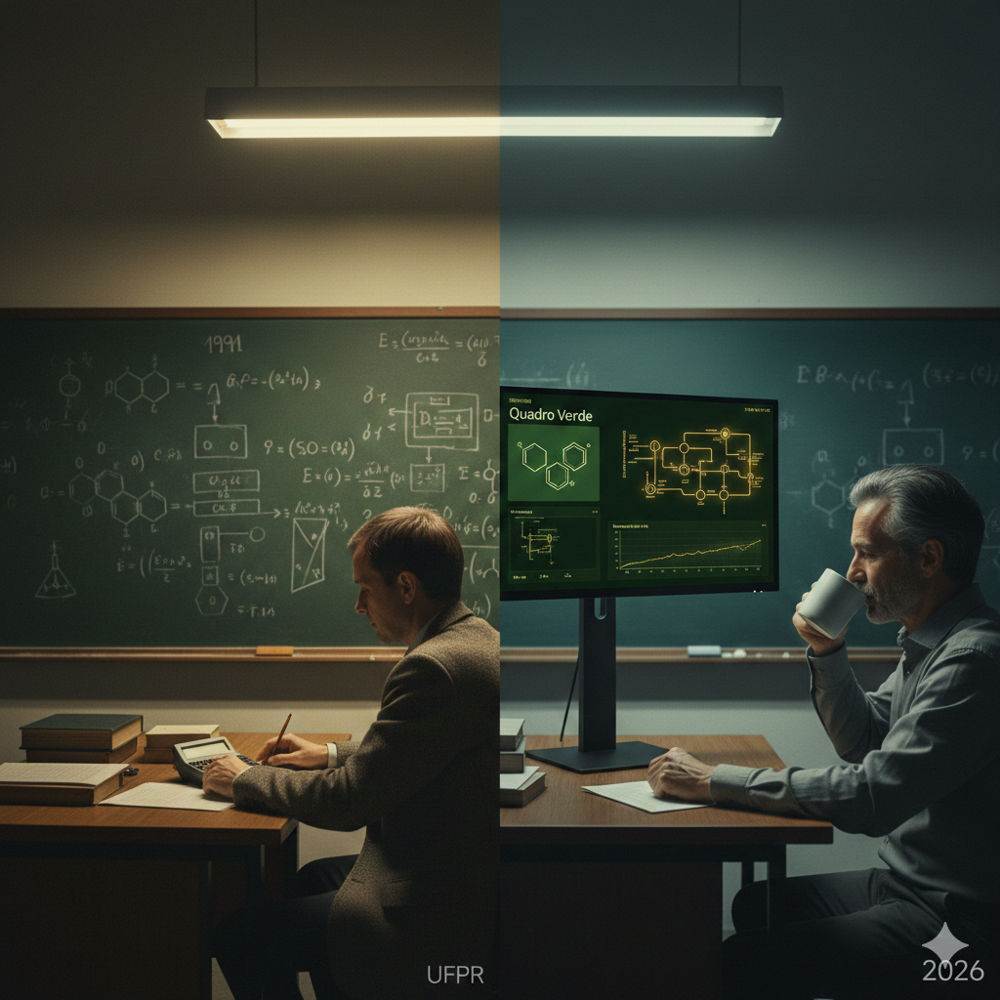

O processo da unidade piloto é representado pelo fluxo de identidades (feedstream) através do reator PFR, com instrumentação de τ (tempo de residência), θ (cobertura) e conversão X.
Equação de desempenho: r_auth = k · η · θ_identidades · θ_sÃtio_livre · regeneração.
O PFR opera em regime contÃnuo; a posição adimensional z varia de 0 (entrada) a 1 (saÃda).
Antes da operação da unidade piloto, verifique os parâmetros do kernel e a telemetria.
parametros.yaml (ou equivalente) com k, η, temperatura de operação e capacidade do reator.θ_occupied = 1 implica envenenamento do catalisador (r_auth = 0). Manter regeneração efetiva e monitorar Gibbs (Fome / Estável / CrÃtico).
A gestão de identidade é modelada como reator catalÃtico: feedstream, Ï„, θ e regeneração determinam a conversão. Telemetria, Data Sheet (RMSE) e Snapshot de Estado permitem auditoria e conformidade industrial.
O Relatório de Operação de Unidade Piloto contém tabelas de balanço de massa, gráficos de seletividade e energia de ativação aparente. Não é um diário do RU; o Estudo de Caso RU aparece apenas como anexo histórico quando aplicável.

A narrativa do Lord OIDC e do Restaurante Universitário (RU) é tratada aqui como antropologia industrial: o RU como “melhor laboratório de Engenharia QuÃmica†na visão de um professor emérito, a fila como análogo da catálise e da validação OIDC (1991 → 2026). O produto oferece um único executável em dois modos: sala RETRO (visor HP48SX, console DOS, Quadro Verde, 5 Atos, estudo do Balanço de Massa do Prof. Soccol — gratuito) e simulador completo (Cápsula, R$ 29,90, license.key). Este apêndice é apenas informativo e não faz parte do procedimento de calibração nem do PFD da unidade piloto.
Referências à Cena Final, Torre Localhost e licença SOVEREIGN constam em documentação comercial e no dossiê da Cara Core.